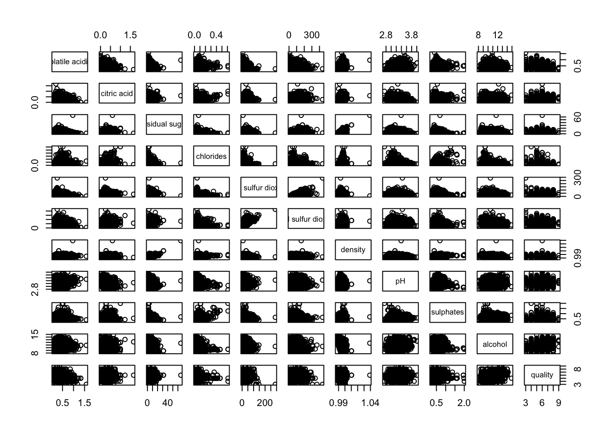
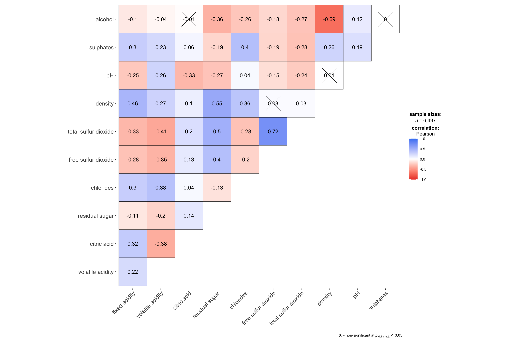
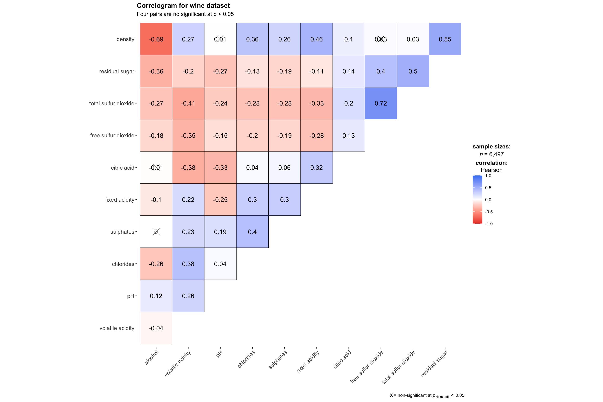
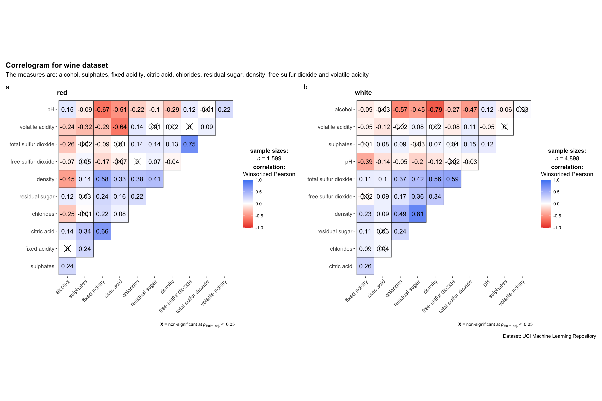
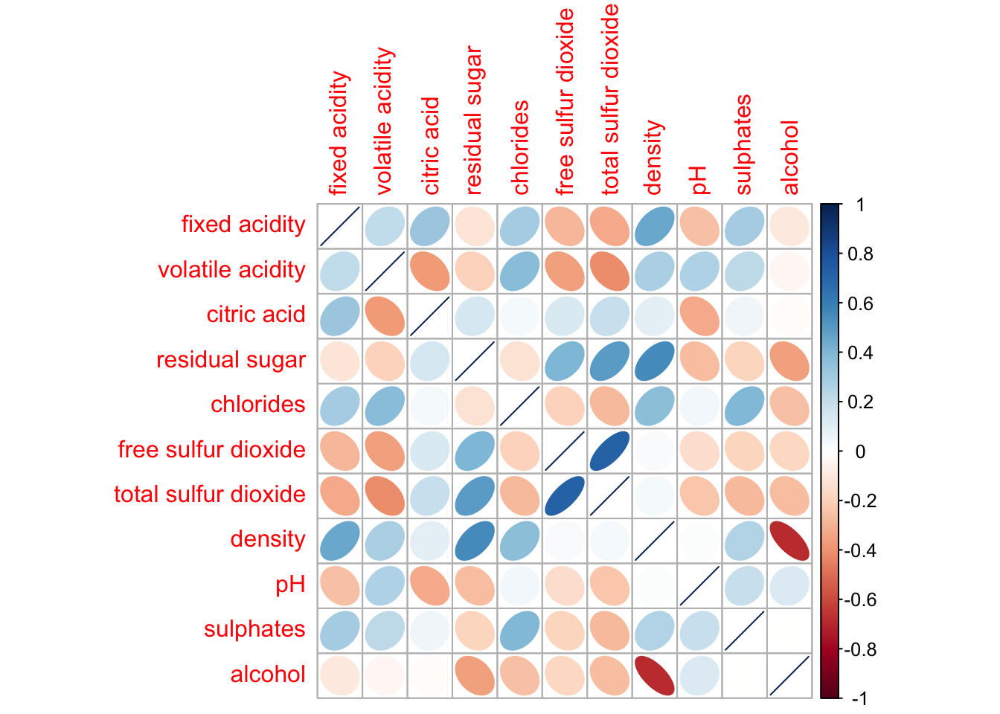
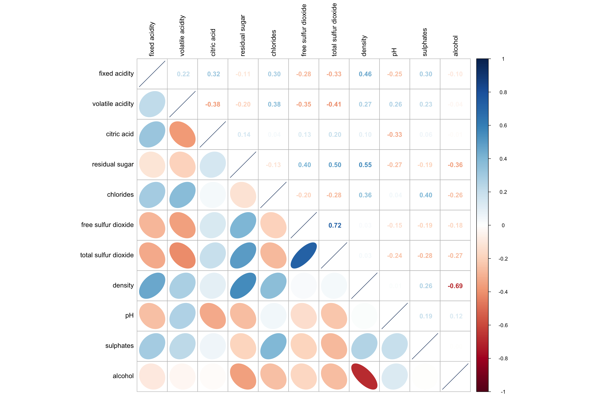
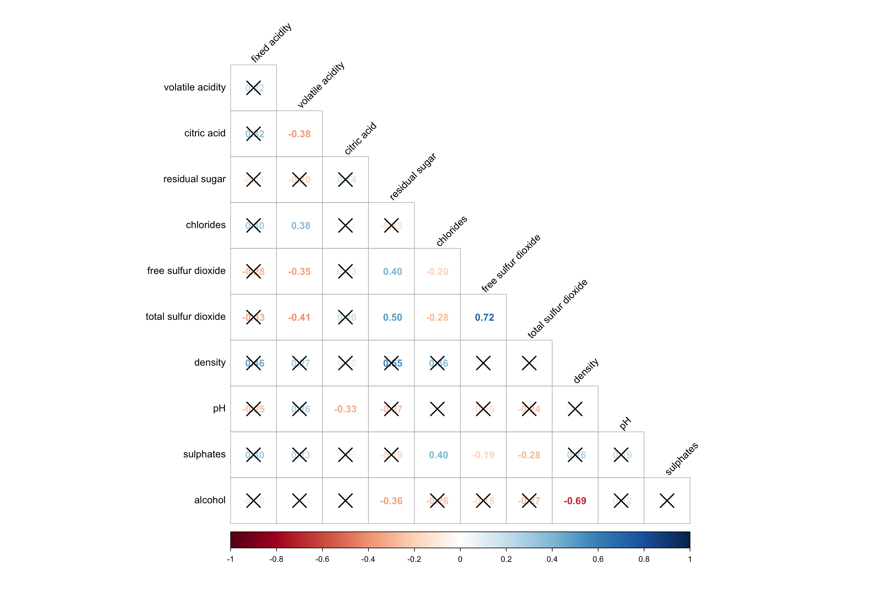
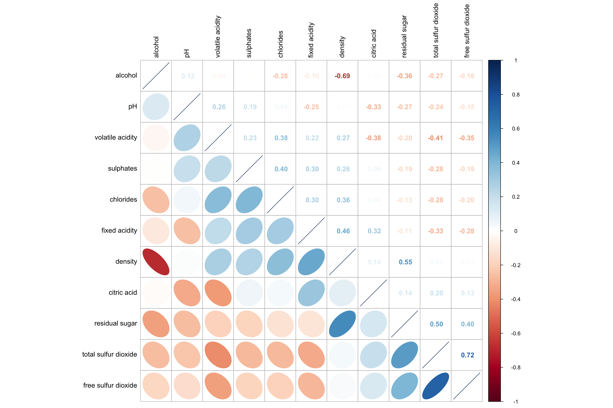
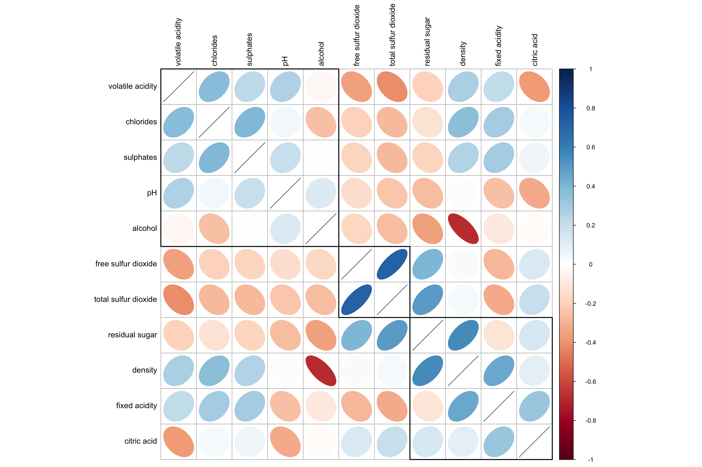

pacman::p_load(corrplot, ggstatsplot, tidyverse)Hands-on Exercise 5B
Visual Correlation Analysis
Correlation coefficients (ranging from -1.0 to 1.0) measure the strength and direction of the relationship between two variables. When dealing with multiple variables, we organize these values into a correlation matrix.
1. Installing and Launching R Packages
Here are the R packages we will use:
tidyverse: For data cleaning and preparation.corrplot: For creating visual, color-coded correlation maps (corrgrams).ggpubr: For generating professional, publication-ready charts.plotly: For building interactive versions of our correlation plots.
2. Importing and Preparing The Data Set
In this hands-on exercise, the Wine Quality Data Set of UCI Machine Learning Repository will be used.
wine <- read_csv("data/wine_quality.csv")3. Building Correlation Matrix: pairs() method
In a scatterplot matrix, we compare every variable in the dataset against every other variable. Each small box in the grid is an individual scatterplot showing the correlation between two specific wine characteristics (like alcohol vs. pH).
pairs(wine[,1:11])
But this plot seems messy,because we are trying to compare 11 or 12 variables at once, which creates a huge grid with very tiny plots.
Then we try to display the relationships among variables: fixed acidity, volatile acidity, citric acid, residual sugar, chlorides, free sulfur dioxide, total sulfur dioxide, density, pH, sulphates and alcohol.
pairs(wine[,2:12])
Drawing the lower corner
To let the plot seems more clear,we can try to show either the upper half or lower half of the correlation matrix instead of both. This is because a correlation matrix is symmetric.
pairs(wine[,2:12], upper.panel = NULL)
Same as the upper side,we can only show the lower side:
pairs(wine[,2:12], lower.panel = NULL)
Including with correlation coefficients
Though we can not see the correlation coefficient in the above plot,that not convenient for us to do analysis,so we try to show the correlation coefficient of each pair of variables.
panel.cor <- function(x, y, digits=2, prefix="", cex.cor, ...) {
usr <- par("usr")
on.exit(par(usr))
par(usr = c(0, 1, 0, 1))
r <- abs(cor(x, y, use="complete.obs"))
txt <- format(c(r, 0.123456789), digits=digits)[1]
txt <- paste(prefix, txt, sep="")
if(missing(cex.cor)) cex.cor <- 0.8/strwidth(txt)
text(0.5, 0.5, txt, cex = cex.cor * (1 + r) / 2)
}
pairs(wine[,2:12],
upper.panel = panel.cor)
4. Visualising Correlation Matrix: ggcormat()
One of the major limitation of the correlation matrix is that the scatter plots appear very cluttered when the number of observations is relatively large (i.e. more than 500 observations).
Next we will use ggcorrmat() of ggstatsplot package to conduct Corrgram data visualisation technique.
The basic plot
ggstatsplot::ggcorrmat(
data = wine,
cor.vars = 1:11)

ggplot.component = list(
theme(text=element_text(size=5),
axis.text.x = element_text(size = 8),
axis.text.y = element_text(size = 8)))5. Building multiple plots
Since ggstasplot is an extension of ggplot2, it also supports faceting. However the feature is not available in ggcorrmat() but in the grouped_ggcorrmat() of ggstatsplot.
grouped_ggcorrmat(
data = wine,
cor.vars = 1:11,
grouping.var = type,
type = "robust",
p.adjust.method = "holm",
plotgrid.args = list(ncol = 2),
ggcorrplot.args = list(outline.color = "black",
hc.order = TRUE,
tl.cex = 10),
annotation.args = list(
tag_levels = "a",
title = "Correlogram for wine dataset",
subtitle = "The measures are: alcohol, sulphates, fixed acidity, citric acid, chlorides, residual sugar, density, free sulfur dioxide and volatile acidity",
caption = "Dataset: UCI Machine Learning Repository"
)
)
6. Visualising Correlation Matrix using corrplot Package
This exercise focuses on using the corrplot package.
Getting started with corrplot
wine.cor <- cor(wine[, 1:11])corrplot(wine.cor)
Working with visual geometrics
The corrplot package offers seven visual methods to display correlation values: circle, square, ellipse, number, shade, color, and pie. While circle is the default setting, we can easily switch to a different style by using the method argument in our code.
corrplot(wine.cor,
method = "ellipse") 
The current layout looks messy, we can reorganize the content for a cleaner presentation.
corrplot(wine.cor,
method = "ellipse",
type="lower")
The default layout of the corrgram can be further customised.
corrplot(wine.cor,
method = "ellipse",
type="lower",
diag = FALSE,
tl.col = "black")
Working with mixed layout
With corrplot package, it is possible to design corrgram with mixed visual matrix of one half and numerical matrix on the other half.
corrplot.mixed(wine.cor,
lower = "ellipse",
upper = "number",
tl.pos = "lt",
diag = "l",
tl.col = "black")
Combining corrgram with the significant test
With corrplot package, we can use the cor.mtest() to compute the p-values and confidence interval for each pair of variables.
wine.sig = cor.mtest(wine.cor, conf.level= .95)We can then use the p.mat argument of corrplot function as shown in the code chunk below.
corrplot(wine.cor,
method = "number",
type = "lower",
diag = FALSE,
tl.col = "black",
tl.srt = 45,
p.mat = wine.sig$p,
sig.level = .05)
Reorder a corrgram
Reordering the matrix is key to finding hidden patterns in your data. While corrplot defaults to the original order, we can change this using the order argument.
Available sorting methods include:
“AOE”: Sorts by the angular order of eigenvectors.
“FPC”: Sorts by the first principal component.
“hclust”: Uses hierarchical clustering (you can also choose specific methods like “ward” or “average”).
“alphabet”: Sorts variables alphabetically.
For even more options, we can use the seriation package.
corrplot.mixed(wine.cor,
lower = "ellipse",
upper = "number",
tl.pos = "lt",
diag = "l",
order="AOE",
tl.col = "black")
Reordering a correlation matrix using hclust
corrplot(wine.cor,
method = "ellipse",
tl.pos = "lt",
tl.col = "black",
order="hclust",
hclust.method = "ward.D",
addrect = 3)